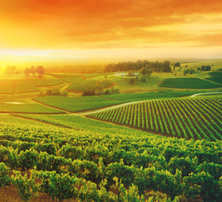

projeto agrinho-Campo da Ana
O campo sempre foi um símbolo de tranquilidade e simplicidade, contrastando com a agitação das grandes cidades. Nele, a natureza se apresenta em sua forma mais pura, com vastas áreas de vegetação, rios e montanhas.A vida no campo é marcada pela proximidade com a terra, onde os agricultores cultivam seus produtos e cuidam dos animais.A rotina é mais lenta, permitindo uma conexão mais profunda com o ambiente e com as estações do ano.A paz e o silêncio predominam, intercalados pelo som dos pássaros e do vento nas árvores. Para muitos, o campo representa um refúgio da correria urbana, um lugar de descanso e reflexão. Porém, apesar de sua beleza, a vida rural exige muito trabalho e dedicação. O campo é um espaço de resistência e tradição, onde as gerações preservam conhecimentos e práticas antigas. Além disso, ele simboliza a sustentabilidade, pois as pessoas vivem em harmonia com os ciclos naturais. O campo, com sua vastidão e serenidade, oferece uma perspectiva única da vida, onde a natureza e o homem coexistem em equilíbrio.
A vida no campoA vida no campo é tranquila e simples, marcada pelo trabalho duro e pela conexão com a natureza. O dia começa cedo, com o som dos animais e o cheiro da terra. A rotina é focada na agricultura e criação de animais, onde cada estação traz um novo ciclo de trabalho e aprendizado. É uma vida de paz, mas também de desafios.